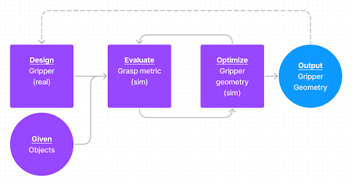
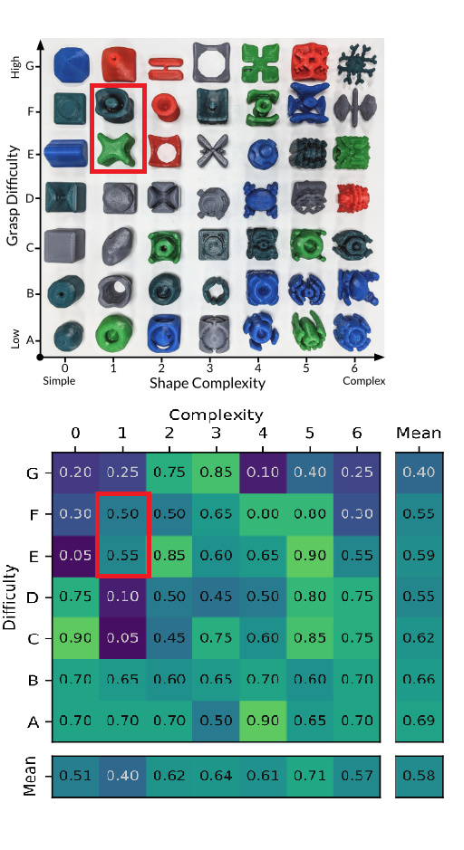
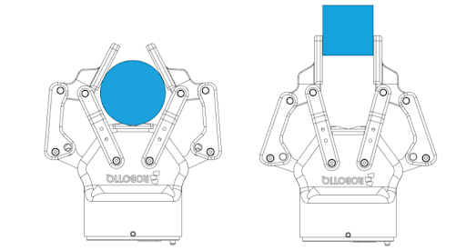
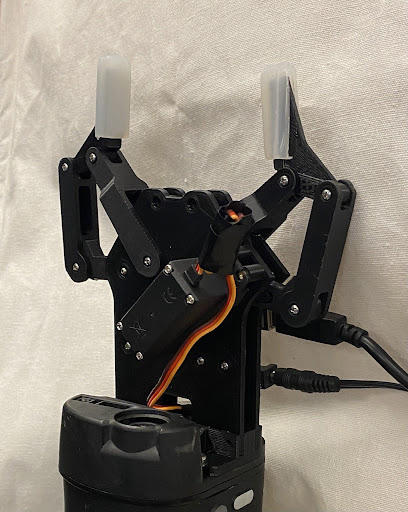
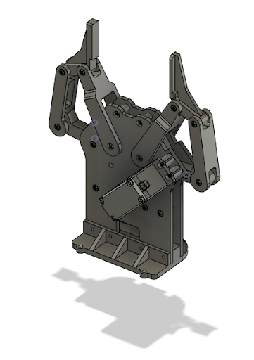
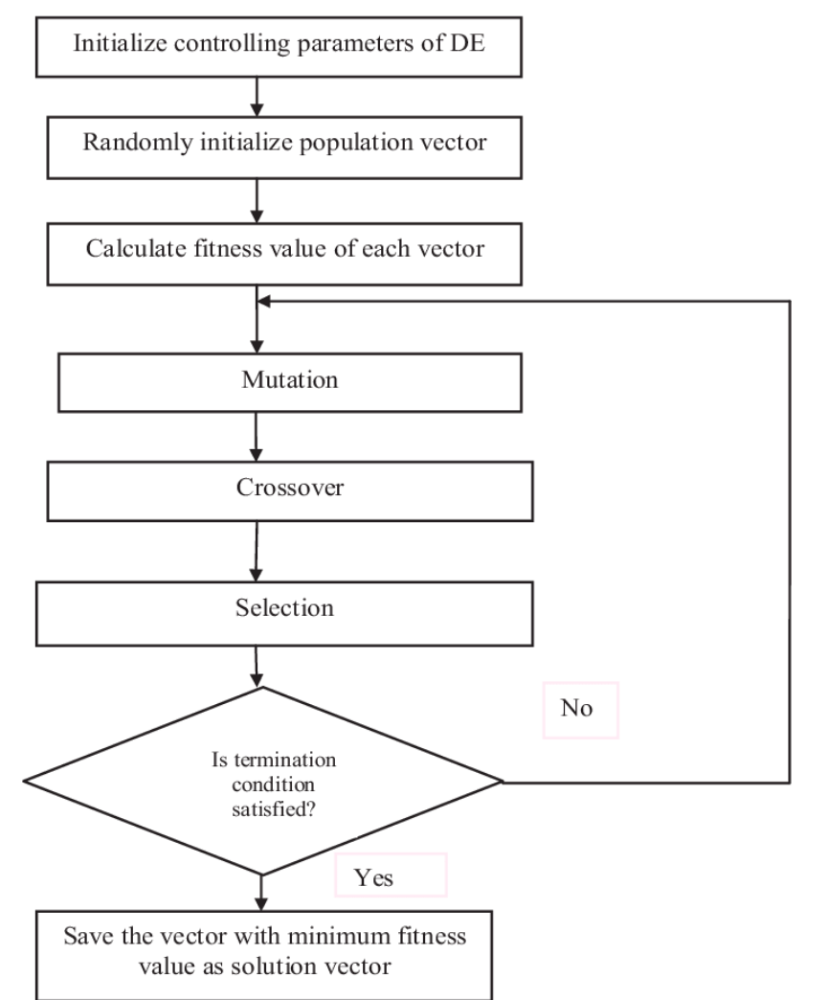

IMPLEMENTATION
Overview
Our implementation can be broken into 4 simple steps:
- Select a set of difficult set of objects to grasp
- Design and fabricate an adaptive gripper
- Evaluate and optimize adaptive gripper over a set of objects
- Feed output gripper back in until convergence

EGAD Dataset
For our object set, we chose objects E1 and F1 from the Evolved Grasping Analysis Dataset (EGAD) evaluation set. We choose these two object because they we low in complexity while high in grasp diffculty. Shape complexity is calculated as the entropy of the probability density function of the angular deficit of each vertex. Grasp difficulty is measured by the 75th percentile grasp quality of the computed Ferrari-Canny quality metric for each object.

Adapative Gripper
For our research subject, we chose the Robotiq 2F-85 to optimization on. We designed our own implementation for our own use using Fusion 360 and Robotiq's patent as a reference. We chose this gripper due to its parallel and encompassing capablities and its mechanical elegance. Our gripper has a 85mm opening and is designed to install onto the Baxter arm. It is actuated by a Towerpro MG996R Servo and controlled via serial commands from a host computer. During testing, we validated that this gripper was capable of performing both parallel and encompassing grasps just like the Robotiq 2F-85. This gripper is the baseline adaptive gripper that we compare all future optimizations to.



Differential Evolution
For our optimization method, we chose to use Differential Evolution to maximize the sum of some quality heuristic for all objects. We chose to use gravity resistance as our heuristic, for its ease of implementation and computational simplicity. For each set of candidate gripper parameters, we judge its quality by computing the gravity resistance metric for its best grasp on each object:
Q(θ, o) = maxφ gravityresistance(θ, φ, o)
This is solved with a sample-based approach. Specifically, we sample 500 valid encompassing grasps, and return the one with the best score. To sample and score grasps for the adaptive gripper, we:
Select a random point on the object mesh and a random angle theta
Initialize an open adaptive gripper with its base’s center in contact with the selected point, and its orientation determined by theta and the face normal at that point
Close the gripper around the mesh by iteratively increas ing joint angles and checking for contact with the mesh and self-collisions
Using the discovered contact points (excluding contact points with the base of the gripper) to compute gravity resistance
